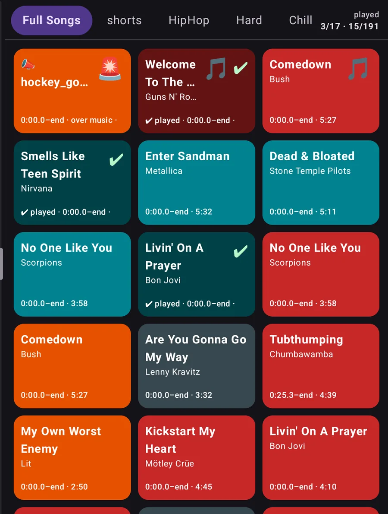
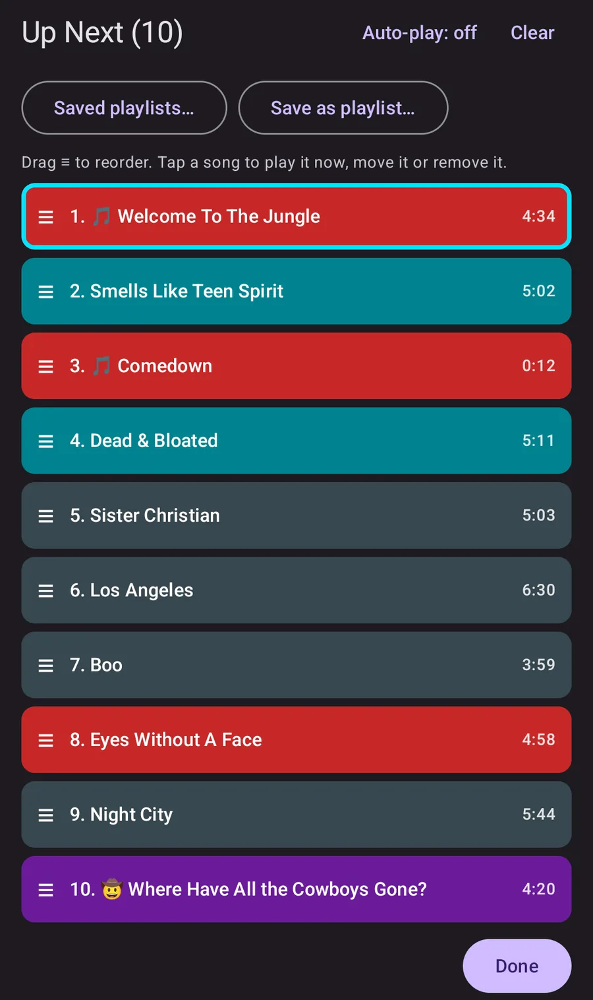
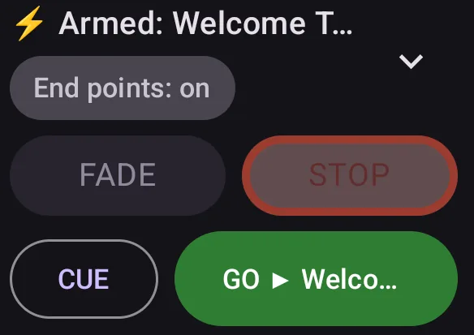
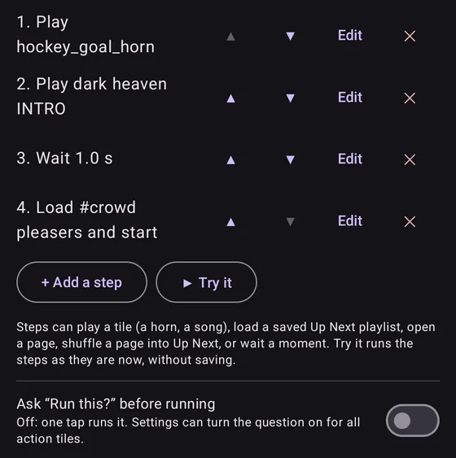
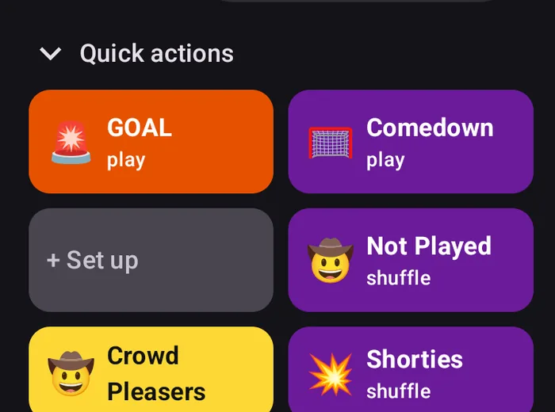

On a folding phone or tablet, the controls and Up Next sit in a side panel and the tiles fill the rest. Folding or unfolding doesn't interrupt the music.
Every sound is one big tile
Share a song from YouTube or YouTube Music, or paste a link, and it becomes a big colored tile. Songs stream through YouTube's own player. You can bring in a whole YouTube Music playlist at once and untick the songs you don't want.
Audio files from your phone work too (MP3, M4A, WAV, FLAC or OGG). Group tiles into pages such as Warm-up, Goals and Penalties, and set exactly where each song starts and ends.

CUE it, then GO
Line songs up in Up Next while play is going on, then start the next one on GO. The first song is loaded ahead, so it starts right away even on a weak signal.
Up Next shows how long each clip will play. Drag to reorder, or turn on auto-play to roll into the next song. GO, FADE and STOP also work from a Bluetooth clicker, a media remote or the volume buttons.

Horns and announcements over the music
Horns and sound effects play on top of the song and start instantly. Built-in horns are included. The music dips while a horn or announcement plays, then comes back.
For announcements, type the text and your phone's built-in voice reads it out. FADE eases the music down, STOP cuts it, and Resume picks the song back up where it left off.

Action tiles In testing
One tile runs several steps in order. For example: play the goal horn, play an intro, wait until it ends, then load a saved playlist.
Action tiles are new and still being tested. Free includes one per page; Pro allows more.

Quick action buttons Pro
Up to six programmable buttons that stay in reach. Each can play a tile, load a preset Up Next list, or open or shuffle a page.
Pinning action tiles to buttons and choosing a top or bottom bar for them are in testing.

Also in the app
Played marks. Tiles dim with a check once played, and Shuffle picks a song you haven't played yet this game.
Volume levelling. Audio files are measured when you add them, so a loud file doesn't blast.
Game lock. Turns off editing so a bumped tile can't change mid-game.
Tags and search. Find any tile by name, artist or tag.
Backup and sharing. Back up everything to one file, and send a page of tiles, with its audio, to another parent.
Free and Pro
Free covers everything you need to play music and sound effects at a game, with no limits on tiles, pages or songs. Playing songs is always free. Pro is a one-time purchase through Google Play, tied to your Google account. There's no subscription.
Helping test? Testers don't pay for Pro. You get a promo code that unlocks it for free. Join the test.
What's included in each
Feature
Free
Pro
Playing
Songs from YouTube and YouTube Music, whole-playlist import
✓
✓
Your own audio files
✓
✓
Horns and sound effects, built-in horns
✓
✓
Start and end points, fades, per-tile volume, looping
✓
✓
FADE, STOP and Resume
✓
✓
Typed announcements and walk-up intros
✓
✓
Up Next
CUE, GO and Up Next with auto-play
✓
✓
Remote control from a clicker or volume buttons
✓
✓
Add a whole page, tag or search result to Up Next
–
✓
Saved Up Next playlists
–
✓
The board
Pages, 12 tile colors and symbols, Grid and List layouts
✓
✓
Compact and Big buttons layouts, tile shapes, wider tiles
–
✓
Custom tile color palette
–
✓
Tag pages and a Not played tab
–
✓
Profiles: separate boards, such as Hockey and Soccer
1
More
Action tiles and buttons
Action tiles In testing
1 per page
More
Quick action buttons (up to 6)
–
✓
Pin action tiles to buttons, top or bottom button bar In testing
–
✓
Voice and intros
Record voiceovers with the phone or a Bluetooth or USB mic
–
✓
Audio walk-up intros, with their own volume and timing
–
✓
Sound Lab: build your own horn In testing
–
✓
Screens and sharing
Phone layout, and side panel on folding phones and tablets
✓
✓
Resize and rearrange the side panel, custom FADE and STOP colors
–
✓
Back up and restore everything
✓
✓
Share a page with another parent
Up to 10 MB of audio
Larger
Features marked In testing are in the app but still being tested, so they may not work perfectly yet.
Good to know
YouTube songs need a signal, and they stop if you leave the app. That's YouTube's rule. Your own audio files, horns and announcements work offline.
Some YouTube uploads don't allow playback in other apps. The app tells you when that happens, and you can pick a different upload of the song.
The app has no accounts, no ads and no analytics.
Help get it on Google Play
Google requires a closed test with real testers before a new app can be released. If you have an Android phone, you can help, get the app early, and get a promo code that unlocks Pro for free.